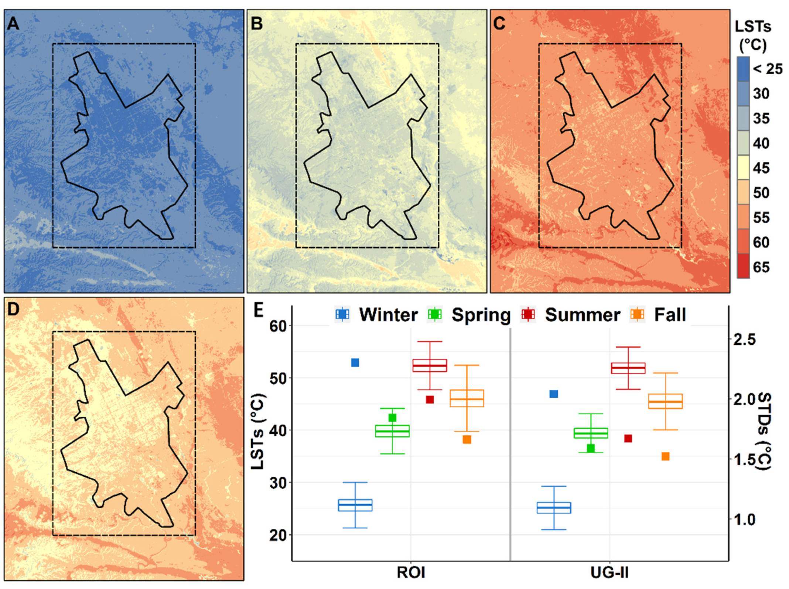

This week, we explored how Earth Observation (EO) data can support policymaking. Below is a usecase illustrating how EO data can address a metropolitan policy challenge in Riyadh.
4.1 Green Riyadh Initiative
The Green Riyadh Initiative is a cornerstone of Saudi Arabia’s Vision 2030, aiming to transform Riyadh into a greener, more sustainable city. The project plans to plant 7.5 million trees across the city, increasing green cover from 1.5% to 9.1% by 2030. It seeks to combat urban heat, improve air quality, and enhance biodiversity, creating a healthier, more sustainable city.
Growing up in Riyadh, I’ve witnessed firsthand how the city’s extreme heat and urban sprawl have intensified over time. During peak summer, it’s not uncommon to see 45°C or higher, and the urban heat island (UHI) effect makes certain areas feel even hotter. Studies have shown that the UHI effect can increase temperatures by 4-6°C in densely built areas, and at its peak, it may exceed 10°C (Santamouris & Vasilakopoulou, 2023), exacerbating the city’s heat challenges.
Air quality is another pressing issue, with high levels of particulate matter (PM2.5) and other pollutants, largely due to Riyadh’s car-centric urban design. Urban greenery has been proven to mitigate these challenges by providing shade, reducing car dependency, and absorbing pollutants (Gössling, 2020). By creating shaded walkways and green corridors, the initiative encourages walking and cycling, offering a sustainable alternative to short car trips.
Since its launch in 2019 by the Royal Commission for Riyadh City (RCRC), the initiative has made significant progress. New parks and green corridors are emerging in neighborhoods, and trees now line almost all major highways. The RCRC has designed a master plan identifying key areas for afforestation, including:
- 3,330 neighborhood gardens
- 2,000 car parking sites
- 16,400 Kilometers of streets and roads
- 272 Kilometers of valleys
- 175,000 Square Kilometers of empty land
RCRC has also established clear guidelines for selecting plant species suitable for Riyadh’s climate and urban environment, prioritizing drought-resistant and native species to ensure sustainability.
The initiative aligns with national goals under Vision 2030, including the Saudi Green Initiative, which aims to plant 10 billion trees nationwide, guided by three overarching targets: emissions reduction, afforestation and land regeneration, and land and sea protection. By increasing green spaces, Riyadh contributes directly to these targets, promoting environmental sustainability and improving quality of life. It also connects to global goals, such as the United Nations Sustainable Development Goals (SDGs), particularly SDG 11 (Sustainable Cities and Communities), SDG 13 (Climate Action), and SDG 15 (Life on Land).
Below is a video that gives an overview about the the initiative:
4.2 Use of EO Data
In this section, I’ll focus on how remotely sensed data can support a key objective of the Green Riyadh Initiative: reducing urban heat. While the initiative’s published documents do not explicitly mention the use of EO data, the reported progress suggests that change detection and monitoring are likely being employed. The initiative identifies specific areas and priorities for afforestation, with targeted numbers for different categories such as neighborhood gardens, parking sites, and valleys.
Thermal imagery from satellites like Landsat 8 and Sentinel-3 is one key application to evaluate land surface temperature (LST) reductions after tree planting (Figure 1), as demonstrated in studies like Sadek et al. (2020) and Xu et al. (2023). However, incorporating LiDAR and high-resolution multispectral data (e.g., from Sentinel-2) can take this a step further by enabling precise microclimate mapping. LiDAR’s ability to map canopy height (link) and density at resolutions down to 1 meter, paired with Sentinel-2’s 10-meter multispectral bands could model localized climate conditions at a granular level. By processing Sentinel-2 data to calculate vegetation indices like the Normalized Difference Vegetation Index (NDVI) and Enhanced Vegetation Index (EVI), planners can monitor the health, photosynthesis, and transpiration of Riyadh’s urban greenery. These indices, when overlaid with canopy maps, could generate microclimate maps allowing for targeted afforestation efforts where tree planting can have the most significant cooling impact.

To enrich this microclimate mapping, datasets from the Copernicus Climate Change Service (C3S) offer a broader climatic lens. The C3S ERA5-Land dataset (link), delivering hourly and monthly variables such as 2-meter air temperature, soil moisture, and evapotranspiration at 9-km resolution, can be downscaled and fused with Sentinel-2 NDVI to reveal, for instance, how afforestation along Riyadh’s wadis lowers near-surface air temperature by 1-2°C while boosting humidity in dry seasons, tailoring planting strategies to maximize cooling. Complementing this, the C3S Seasonal Forecast dataset (link) (e.g., ECMWF’s SEAS5 model) provides six-month predictions of temperature and precipitation anomalies, allowing policymakers to optimize planting schedules—perhaps prioritizing early spring in dust-prone areas like Diriyah to enhance tree establishment and microclimatic benefits.
Relating this to the discussed study during lecture by MacLachlan et al. 2021, which emphasized the importance of strategically placing trees to optimize temperature reduction, microclimate mapping emerges as a vital tool for enhancing the effectiveness of the Green Riyadh Initiative. The initiative’s published documents, while rich with targets, lack the fine-scale spatial detail needed to prioritize plantings where heat mitigation is most urgent. Microclimate mapping, powered by EO data, fills this gap by identifying localized heat sinks offering a pathway to maximize ecological returns on investment. Without such granularity, the initiative risks diluting its cooling potential across less impactful sites, underscoring the transformative role EO-driven mapping could play in sharpening policy focus and execution.
4.3 Reflections
With the big transformation Riyadh is seeing these years, it was challenging to identify a single policy or a challenge that EO can support, but the Green Riyadh Initiative stands out for its citywide reach. Shaded walkways, new parks, and increased pedestrian activity are visible changes, but whether these efforts meaningfully reduce LST remains unclear without EO data. This highlights a critical gap: without leveraging remote sensing technologies, we cannot fully understand or measure the success of such initiatives. While researching I came across an intriguing finding from an urban scale study on one of Riyadh’s neighborhoods by Haddad et al. (2024). They highlighted how non-irrigated plants help cool cities at night but aren’t very effective during the day, whereas Irrigated trees are the best option for cooling cities both day and night. This aligns with micro-scale studies, such as Zölch et al. (2016), which emphasize the importance of detailed EO data in understanding localized climate impacts and optimizing urban greening strategies.
On a broader note, although not related to my use case, one of the key examples that highlight EO data’s power comes from the International Energy Agency (IEA). In 2022, they reported that satellite imagery revealed methane emissions from the energy sector to be 70% higher than official government reports. This underscores EO’s potential to provide accurate, actionable insights that can drive policy decisions. In conclusion, incorporating EO data into more policies isn’t just an enhancement—it’s essential for grounding decisions in evidence, ensuring initiatives like Green Riyadh deliver measurable benefits, and tackling global challenges with precision and accountability.
4.4 References
Alghamdi, A. S., Alzhrani, A. I., & Alanazi, H. H. (2021). Local Climate Zones and Thermal Characteristics in Riyadh City, Saudi Arabia. Remote Sensing, 13(22), 4526. https://doi.org/10.3390/rs13224526
Gössling, S. (2020). Why cities need to take road space from cars - and how this could be done. Journal of Urban Design, 25(4), 443–448. https://doi.org/10.1080/13574809.2020.1727318
Haddad, S., Zhang, W., Paolini, R., Gao, K., Altheeb, M., Al Mogirah, A., Bin Moammar, A., Hong, T., Khan, A., Cartalis, C., Polydoros, A., & Santamouris, M. (2024). Quantifying the energy impact of heat mitigation technologies at the urban scale. Nature Cities, 1(1), 62–72. https://doi.org/10.1038/s44284-023-00005-5
International Energy Agency. (2022, February 23). Methane emissions from the energy sector are 70% higher than official figures. https://www.iea.org/news/methane-emissions-from-the-energy-sector-are-70-higher-than-official-figures
MacLachlan, A., Biggs, E., Roberts, G., & Boruff, B. (2021). Sustainable City Planning: A Data-Driven Approach for Mitigating Urban Heat.
Sadek, M., Beshr, A. A., Kaloop, M. R., Liu, G., Co, Y., Mustafa, E. K., Zarzoura, F., & Zhao, D. (2020). Study for Predicting Land Surface Temperature (LST) Using Landsat Data: A Comparison of Four Algorithms. Advances in Civil Engineering, 2020(2020), 1–16. https://doi.org/10.1155/2020/7363546
Santamouris, M., & Vasilakopoulou, K. (2023). Recent progress on urban heat mitigation technologies. Science Talks (Online), 5, 100105-. https://doi.org/10.1016/j.sctalk.2022.100105
Xu, X., Pei, H., Wang, C., Xu, Q., Xie, H., Jin, Y., Feng, Y., Tong, X., & Xiao, C. (2023). Long-term analysis of the urban heat island effect using multisource Landsat images considering inter-class differences in land surface temperature products. The Science of the Total Environment, 858, 159777-. https://doi.org/10.1016/j.scitotenv.2022.159777
Zölch, T., Maderspacher, J., Wamsler, C., & Pauleit, S. (2016). Using green infrastructure for urban climate-proofing: An evaluation of heat mitigation measures at the micro-scale. Urban Forestry & Urban Greening, 20, 305–316. https://doi.org/10.1016/j.ufug.2016.09.011